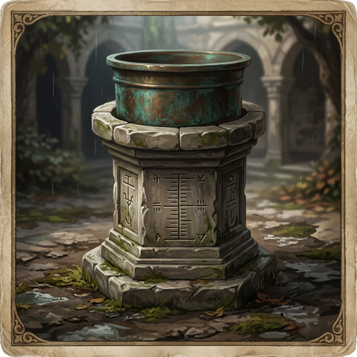
빗물을 받는 정교한 석대
진흙 바닥에 놓인 원통형 청동 그릇과 그것을 받치고 있는 눈금 새겨진 돌 받침대

빗물을 받는 정교한 석대
진흙 바닥에 놓인 원통형 청동 그릇과 그것을 받치고 있는 눈금 새겨진 돌 받침대
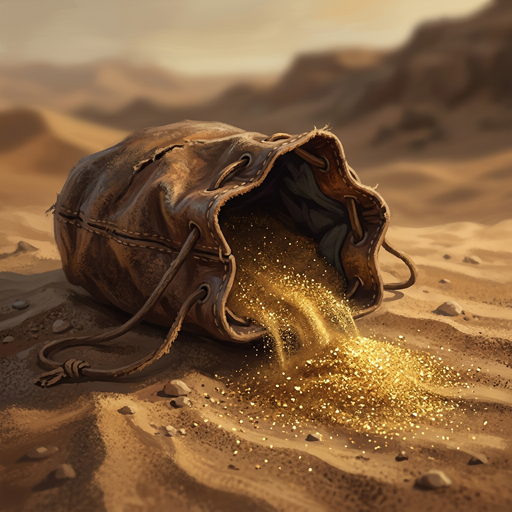
황금 가루가 든 가죽 주머니
사막의 모래 위에서 열린 가죽 주머니 밖으로 고운 황금 가루가 쏟아져 나와 쌓인 모습
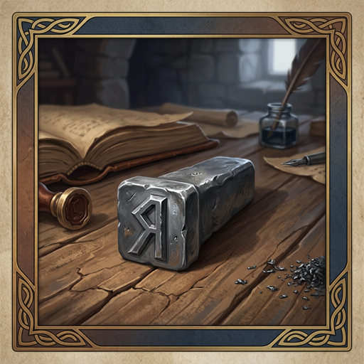
납과 주석의 합금 조각
손가락 마디만 한 금속 막대 끝에 거꾸로 새겨진 글자 하나가 날카롭게 벼려진 모습
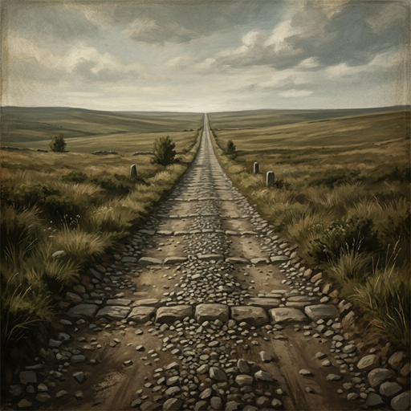
지평선까지 뻗은 돌길
여러 층의 돌과 자갈을 쌓아 만든 견고하고 일직선인 도로가 들판을 가로지르는 모습
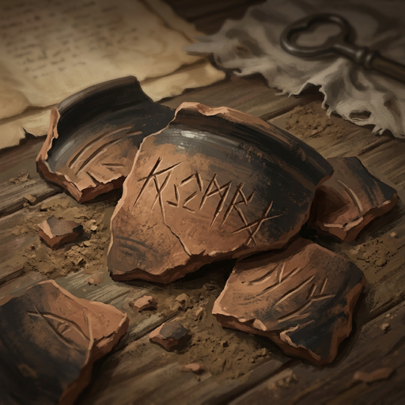
이름이 새겨진 도자기 파편
깨진 항아리 조각 위에 날카로운 도구로 누군가의 이름이 긁혀 있는 모습들이 흩어져 있는 장면
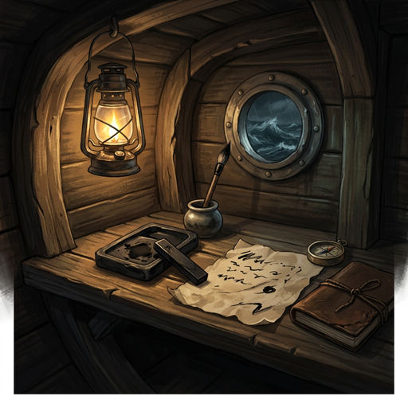
좁은 선실의 집무 책상
흔들리는 등불 아래, 벼루와 먹, 그리고 거친 파도가 보이는 작은 창문이 달린 목조 선실 내부의 책상
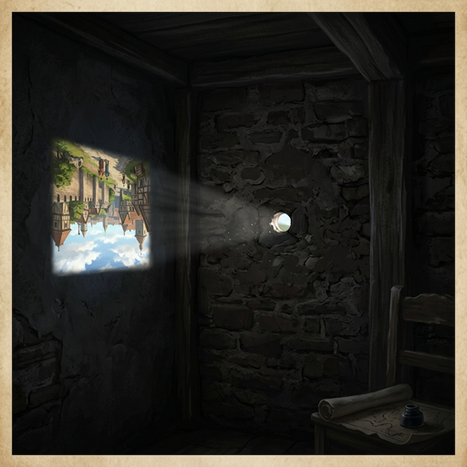
어두운 방의 작은 구멍
완전한 어둠 속에 뚫린 작은 구멍을 통해 반대편 벽에 거꾸로 맺힌 바깥 풍경의 상
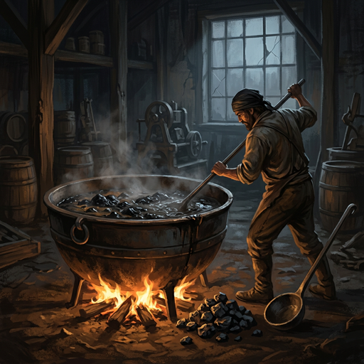
피치블렌드 정제 가마
낡은 창고 안에서 거대한 무쇠솥에 검은 광석 더미를 넣고 끓이는 거친 노동의 현장
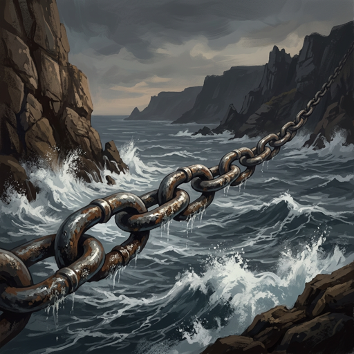
좁은 해협의 쇠사슬
거센 물살이 치는 좁은 바다 길목 아래 설치된, 팽팽하게 당겨진 거대한 철제 사슬
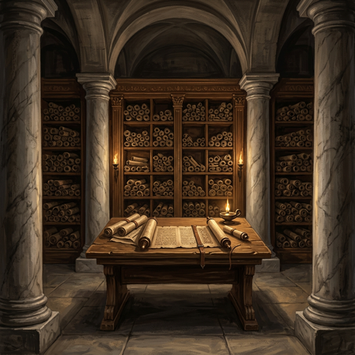
파피루스 보관소
거대한 대리석 기둥 사이, 벽면 가득한 목제 선반에 끝없이 쌓여 있는 원통형 파피루스 두루마리들
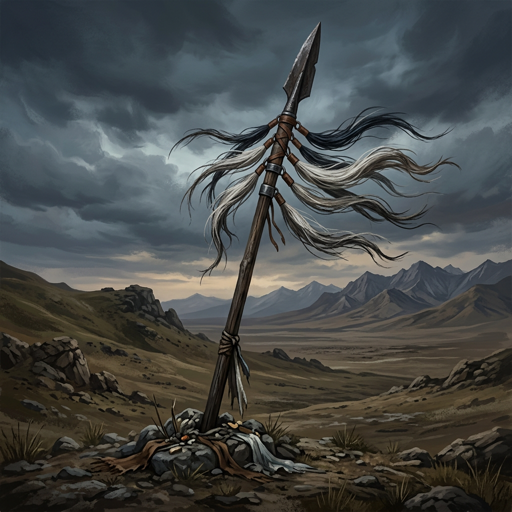
초원의 깃발
황량한 고원 위, 아홉 개의 흰 말총이 매달린 거친 나무 창(술데)이 바람에 휘날리는 모습
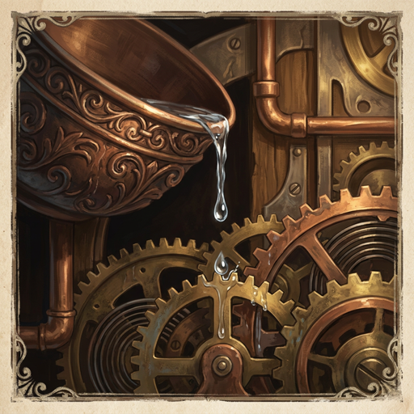
흐르는 시간
정교하게 깎인 구리 그릇에서 물이 일정하게 떨어지며 아래쪽 톱니바퀴를 건드리는 클로즈업
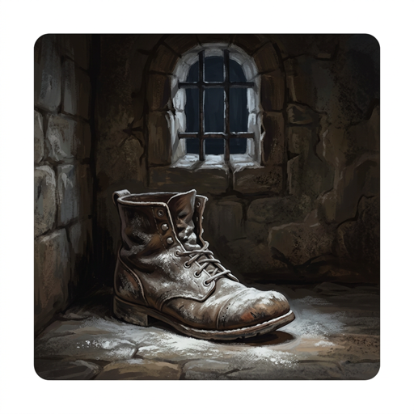
석회 가루 묻은 부츠
하얀 석회 가루가 잔뜩 묻은 낡고 투박한 가죽 작업화가 감옥의 좁은 창문 아래 놓인 풍경
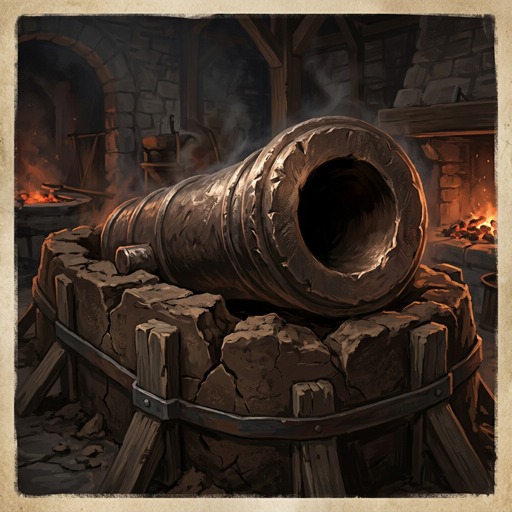
거대한 주조
흙으로 만든 거대한 거푸집에서 갓 뽑아낸, 성인 남성보다 굵은 거대 청동 대포의 총구
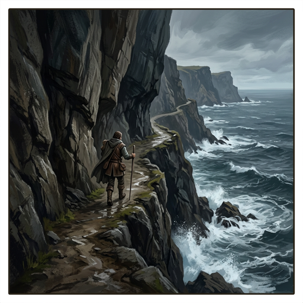
좁은 길목
깎아지른 절벽과 파도가 치는 해안선 사이에 겨우 몇 명만이 지나갈 수 있는 좁은 흙길
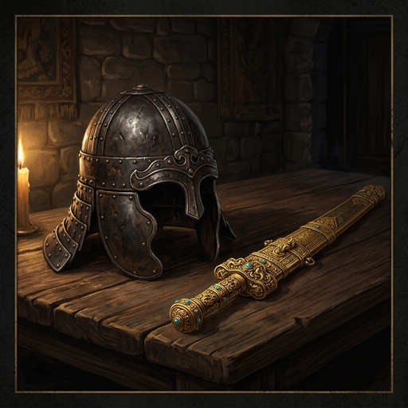
철기 문명의 유산
가야 양식의 정교한 철제 판갑 투구와 목가리개가 어두운 방 안 테이블 위에 놓여 있고, 그 옆에 신라의 금제 장식검이 나란히 놓인 장면
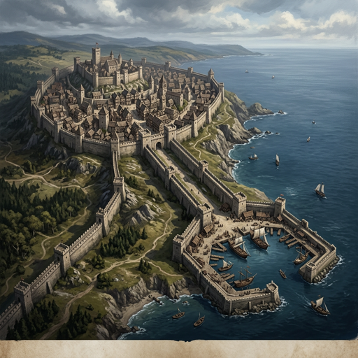
긴 성벽의 도시
도시에서 항구까지 길게 뻗은 두 줄기의 거대한 석조 성벽이 내려다보이는 부감 시점의 풍경
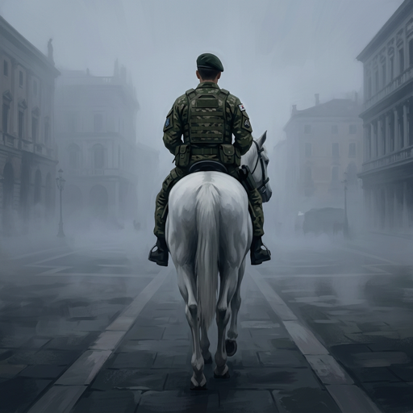
백마와 제복
흰 말을 탄 인물이 현대적인 군복을 입고 안개 낀 광장을 지나가는 정적인 뒷모습
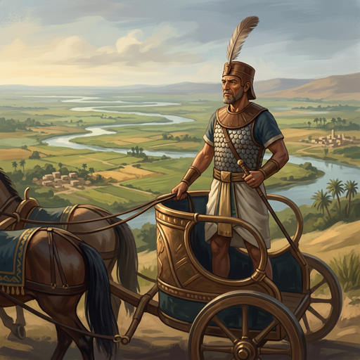
리비아의 깃털
전통적인 파라오의 왕관 대신 타조 깃털을 머리에 꽂은 지휘관이 전차 위에서 나일강 델타 지역을 바라보는 장면
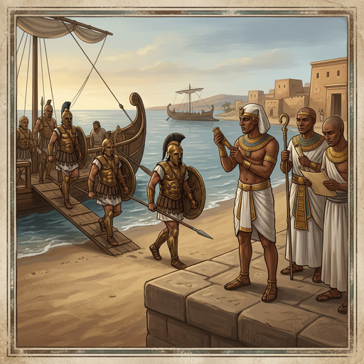
바다에서 온 청동 인간
이집트 해안가에 청동 갑옷을 입은 그리스 용병들이 배에서 내리고 있고, 이를 지켜보는 이집트 관료들의 모습
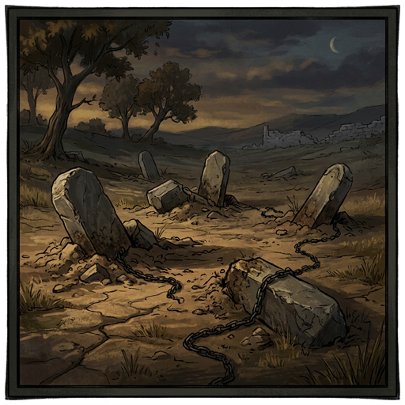
부채의 종결
거친 흙바닥에 깊게 박혀 있던 커다란 경계석(Horos)들이 뿌리째 뽑혀 나뒹구는 황량한 들판의 풍경
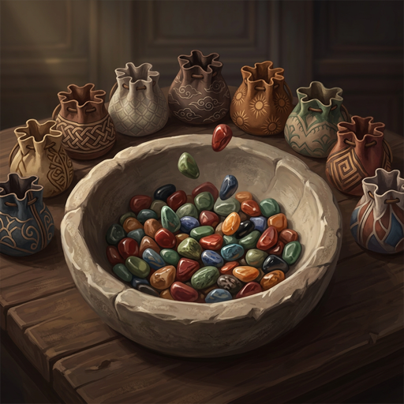
섞이는 혈통
서로 다른 무늬가 그려진 열 개의 주머니에서 꺼낸 색색의 돌들이 하나의 커다란 그릇 속에서 뒤섞이는 정적인 장면
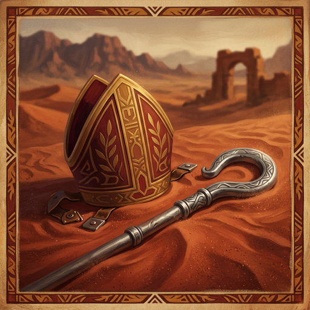
아프리카의 유산
북아프리카의 뜨거운 붉은 사막 모래 위에 놓인 로마식 주교관과 은색 지팡이
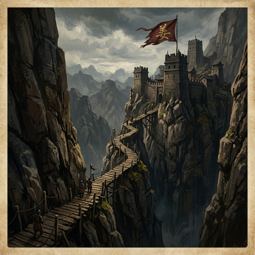
절벽의 요새
두 개의 거대한 암벽 사이를 가로지르는 좁고 가파른 잔도와 그 끝에 걸린 외로운 '강(姜)'자 깃발
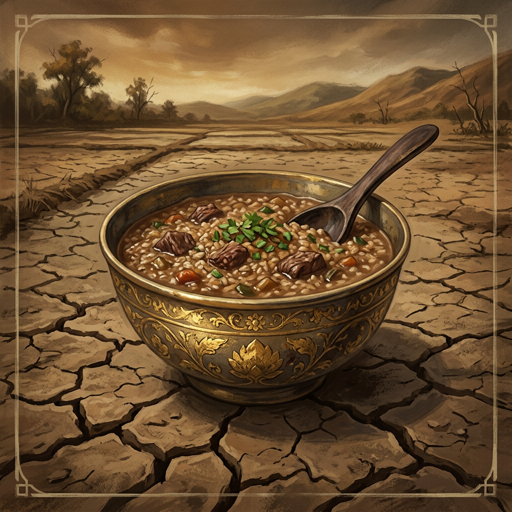
고기 죽의 역설
가뭄으로 갈라진 논바닥 위에 화려한 금박 장식이 된 그릇이 놓여 있고, 그 안에 고기가 가득 든 죽이 담겨 있는 모습
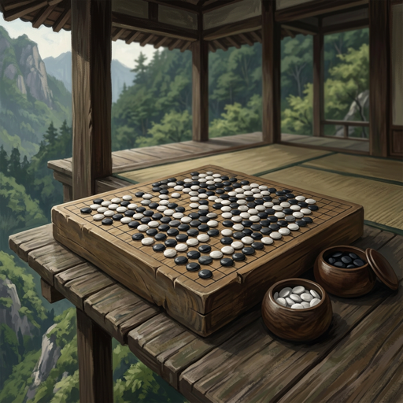
정적 속의 대국
산속 정자 아래, 아무도 없는 바둑판 위에 흑백의 돌들이 복잡하게 놓여 있는 클로즈업
금화 속의 연주자
황금 동전 위에 새겨진, 소파에 앉아 다리 위에 악기(비나)를 놓고 연주하는 왕의 양각
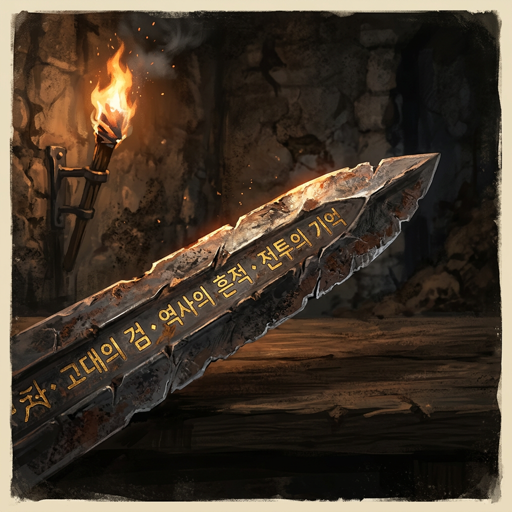
금입사 철검
어두운 방 안에서 횃불에 비친, 금으로 글자가 새겨진 낡은 철검의 날카로운 단면
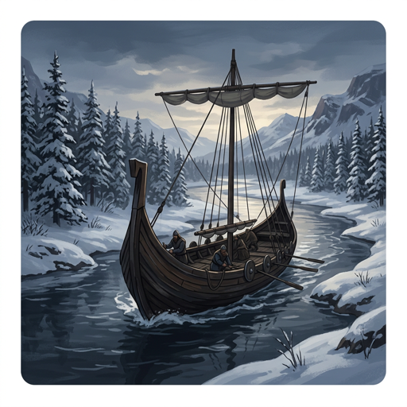
북쪽에서 온 배
눈 덮인 강변을 따라 거슬러 올라오는, 화려한 장식보다는 실용적인 구조의 대형 목조선
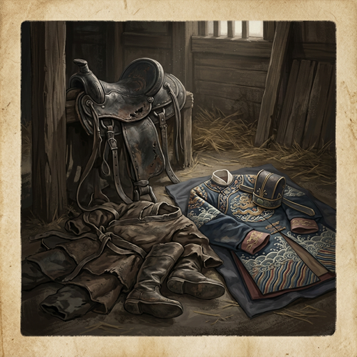
버려진 호복
말 안장 옆에 아무렇게나 던져진 거친 가죽 옷과 장화, 그 옆에 놓인 정교한 한족의 관복
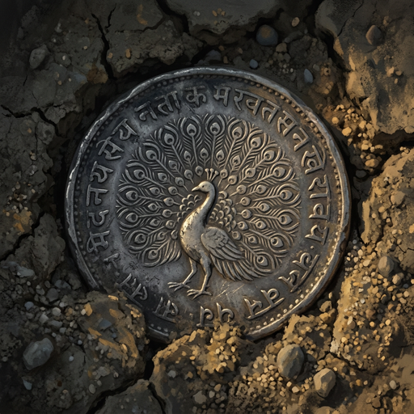
공작새가 새겨진 은화
날개를 편 공작새와 산스크리트어 비문이 희미하게 남은 낡은 은화가 거친 흙바닥에 떨어져 있는 장면
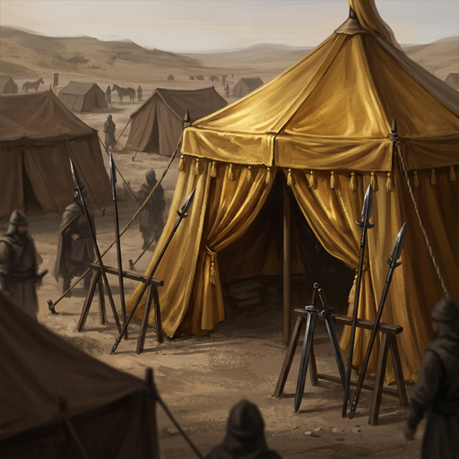
영무의 군막
먼지 날리는 변방의 삭막한 군영 한복판에 급하게 설치된 황금색 비단 장막과 군사들의 창검
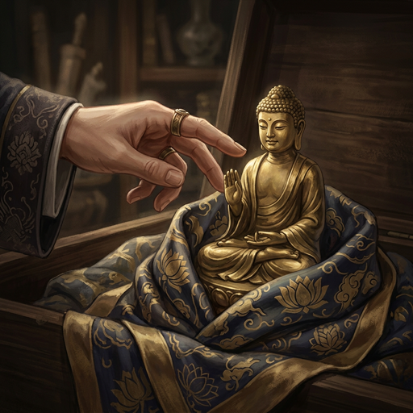
백제의 불상
백제에서 건너온 비단에 싸인 작은 금동 석가여래상과 그것을 경이롭게 바라보는 귀족의 손
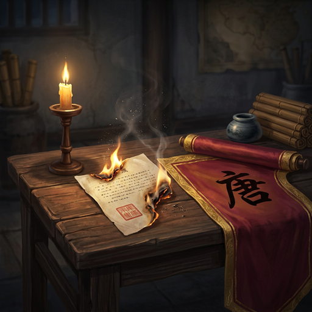
태원의 거병
수나라의 관직인이 찍힌 공문서가 촛불에 타고 있고 그 옆에 당(唐)이라 적힌 깃발이 놓인 책상
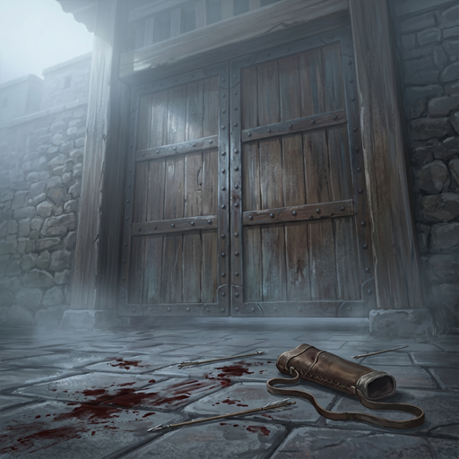
현무문의 새벽
새벽 안개 속에서 닫힌 거대한 성문 아래 흩뿌려진 핏자국과 주인 잃은 화살통
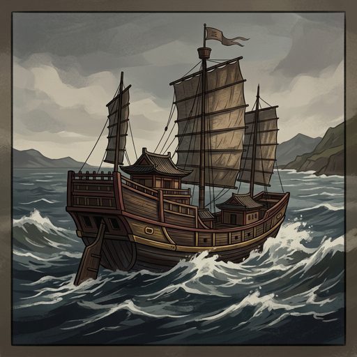
바다를 건너는 거대한 목선
7세기 동양의 양식을 띤 거대한 외교 선박이 거친 파도를 뚫고 대륙을 향해 항해하는 모습
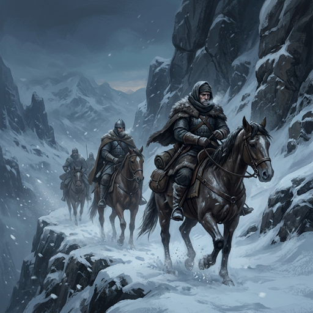
눈 덮인 고원의 행군
혹독한 추위 속에서 털옷을 입은 기병들이 눈보라를 뚫고 험준한 산맥을 넘어 적의 배후를 기습하는 장면
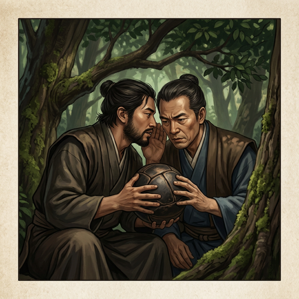
숲속의 은밀한 회합
울창한 나무들 사이에서 두 남자가 머리를 맞대고 비밀스럽게 대화하며 가죽 공(Kemari)을 만지는 장면
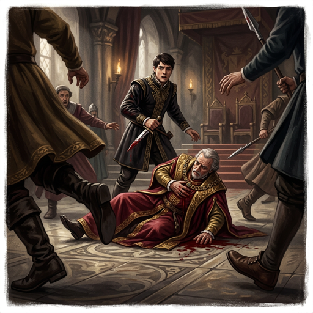
궁정의 유혈극
의식 중에 갑자기 칼을 뽑아 든 청년과 바닥에 쓰러진 귀족, 그리고 놀라 흩어지는 관리들의 발치
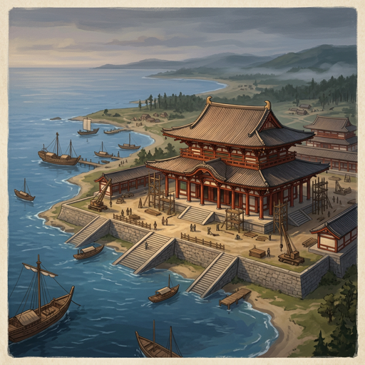
항구 도시의 새 궁궐
바다와 인접한 나니와(현재의 오사카 부근) 해안가에 새로 지어지는 웅장한 목조 궁궐의 전경
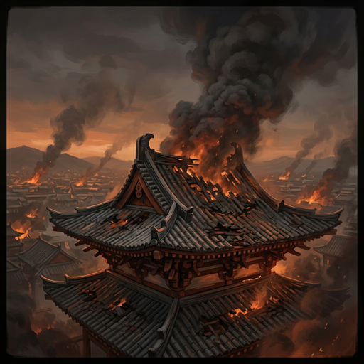
낙양의 불길
검게 그을린 당나라 양식의 기와지붕 위로 솟구치는 연기와 멀리 보이는 불타는 도성
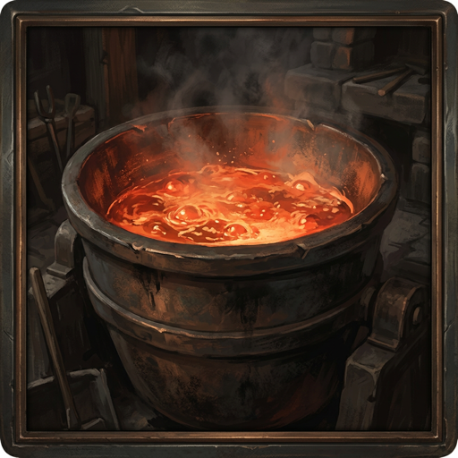
청동의 끓음
거대한 가마솥 안에서 이글거리며 녹아내리는 붉은 빛의 액체 청동
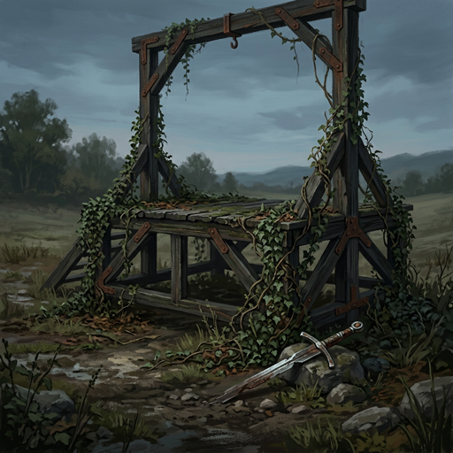
녹슨 형틀
오랫동안 사용하지 않아 담쟁이덩굴이 감싸고 있는 나무 사형틀과 바닥에 굴러다니는 깨진 칼
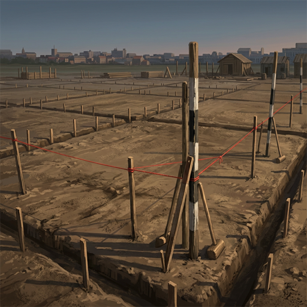
새로운 도시의 눈
격자무늬로 구획된 거대한 흙바닥 위에 놓인 측량용 나무 막대와 붉은 끈
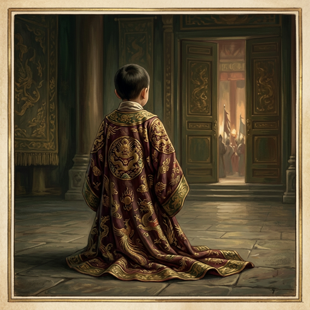
어린 후계자
너무 커서 흘러내리는 화려한 비단옷을 입고 어색하게 서 있는 아주 어린 남자아이의 뒷모습
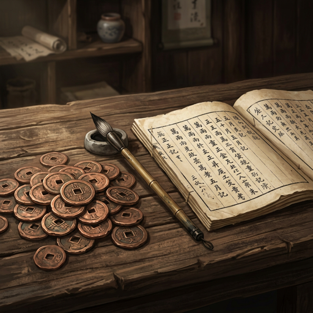
동전과 장부
거칠게 주조된 구리 동전 더미 옆에 붓과 꼼꼼하게 기록된 한자 장부가 놓여 있는 나무 탁자
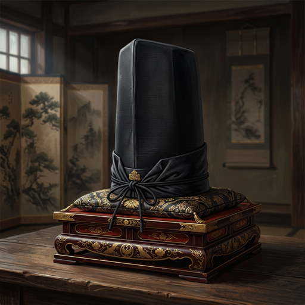
검은 관모(에보시)
칠기 받침대 위에 놓인, 권위를 상징하는 높고 빳빳한 검은색 비단 관모
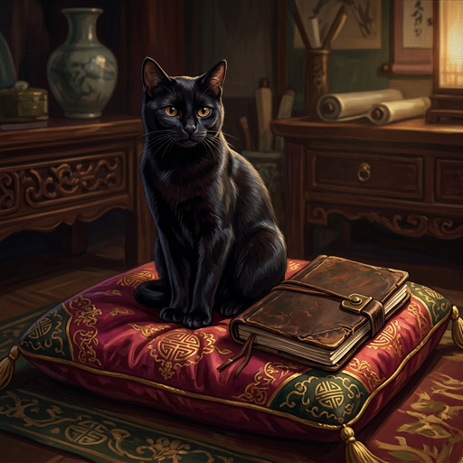
검은 고양이
비단 방석 위에 앉아 있는 윤기 나는 검은 고양이와 그 옆에 놓인 일기장
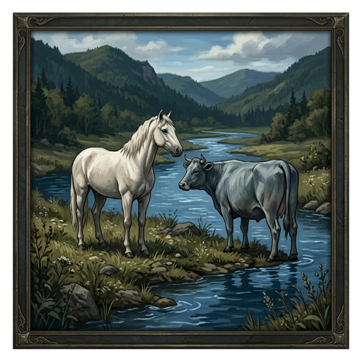
백마와 청우
푸른 강변에 서 있는 흰 말 한 마리와 회색 소 한 마리
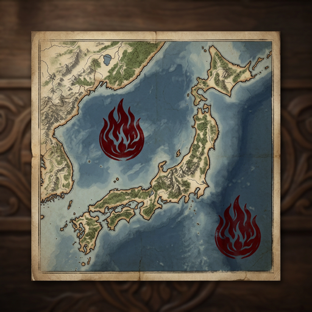
동서의 불길
일본 지도의 동쪽 끝과 서쪽 바다 지점에 붉은 불꽃 모양의 인장이 찍혀 있는 지도